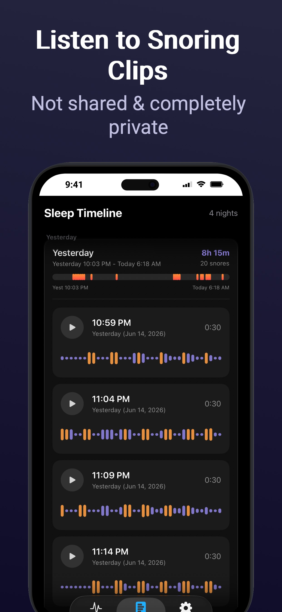

Private snore monitoring for iPhone and Apple Watch
Sleep Better,
Naturally
SnoreDetector listens while you sleep and gently nudges you toward quieter rest — everything processed on your iPhone.
On-device audio
No analytics
Optional Watch taps
